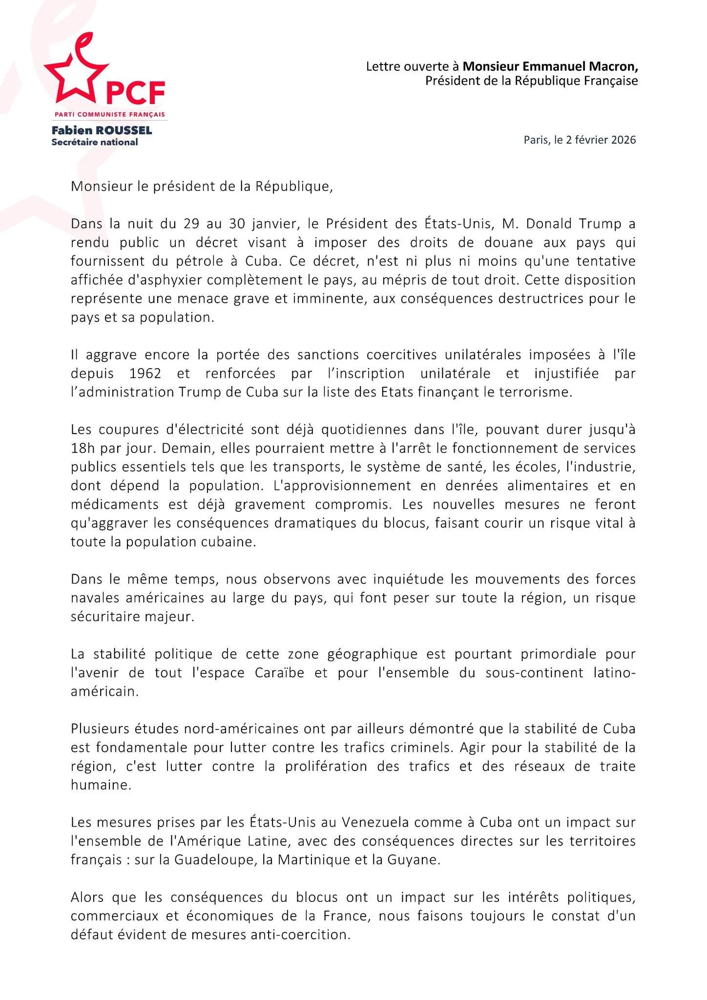
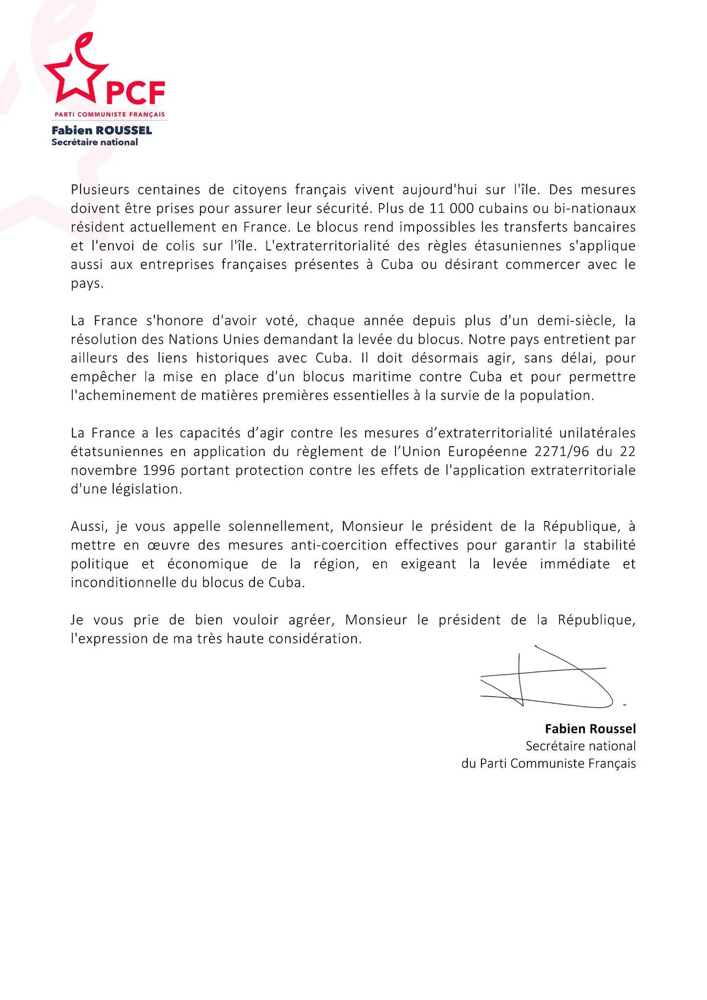

Publication relayée par le PCF 79
Fabien Roussel écrit au président de la République au sujet de Cuba
Date de mise à jour indiquée par Facebook · 2 février 2026
Texte de la publication · Fabien Roussel et le PCF national
Donald Trump a décidé de porter une nouvelle attaque contre l’économie cubaine, qui subit déjà un embargo terrible !
J’ai adressé ce jour une lettre ouverte au Président de la République pour que la France refuse les injonctions de Trump, protége ses ressortissants et fasse respecter le droit international.
Ne laissons pas Donald Trump mettre en cause la stabilité de la région, la sécurité des populations et les intérêts de la France.


Sources
Fabien Roussel et le PCF national · publication relayée par le PCF 79 · bibliothèque Facebook · AR-0002-FB-00880
À lire aussi · Le PCF appelle à lever le blocus de Cuba